Shirashi Menu
Best dishes
This list is non-exhaustive, our menu include more than those depending on which restaurant it is.
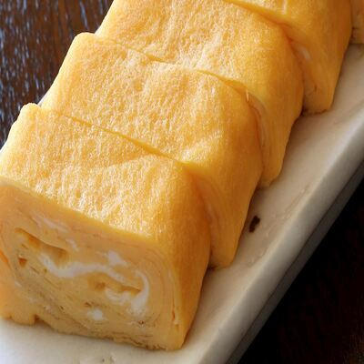
Tamagoyaki 5€
Tamagoyaki is a Japanese omelet dish made by using a unique cooking method - the eggs are folded into themselves until they are fully cooked.
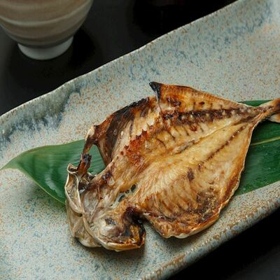
Himono 10€
The Japanese term himono encompasses various types of dried fish products. It is usually prepared with smaller fish varieties such as mackerel or sardines.
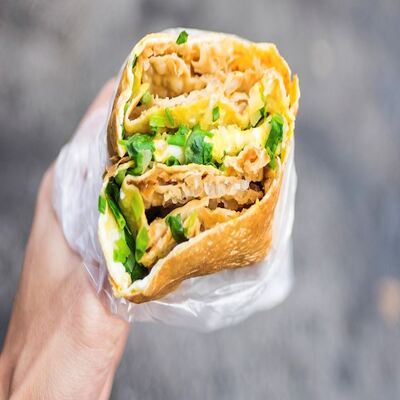
Jianbing 8€
A favorite breakfast item in China sold by numerous street food vendors early in the morning. Jianbing or fried pancake is a thin and savory crêpe-like pancake that is made by spreading batter over a hot, cast-iron slab with a wooden paddle.
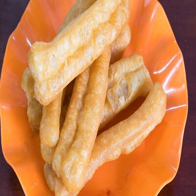
Youtiao 6€
Youtiao is one of the most popular breakfast foods in China, consisting of Chinese breadsticks that are fried in pairs and connected in the middle. The result is a puffy snack that is crispy on the exterior and tender on the interior.
Miso soup 4€
Miso soup is a traditional Japanese soy-based soup made from a stock called dashi, miso paste, and various additional ingredients such as seaweed or tofu.
Kimchi grilled cheese 10€
Kimchi is a staple of Korean cuisine. Here, kimchi and mozzarella cheese come together for a twist on the classic grilled cheese.
Bun bo hue 12€
Bun bo hue is the lesser known brother of the pho. This noodle soup, originally from the city of Hue, contains rice vermicelli (bun), oxtail (bo), a fragrant, tasteful broth and sometimes chunks of coagulated pig's blood.
Khanom Pang Na Moo 10€
Khanom pang na moo or thai pork toast is one of the most addictive and filling Thai snacks.
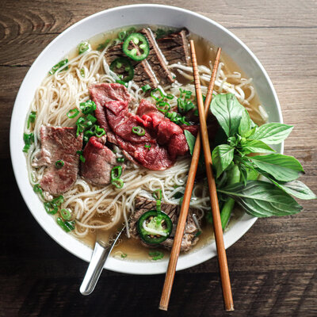
Pho 16€
Pho is a vietnamese dish that consists of a flavorful broth infused with fragrant herbs and spices, thin rice noodles, and tender slices of beef or chicken with fresh herbs, bean sprouts, and lime as garnish.
Bento box 18€
The bento box is the traditional lunch for every japanase, ours is served with tamagoyaki, rice, pork and seaweed salad. The best choice for those who want to experience the true culture of Japan.
Pad Thai 16€
Pad Thai is an exemplary dish from Thailand, representing the epitome of spicy Asian food. This stir-fried noodle dish features a delectable combination of rice noodles, shrimp or chicken, bean sprouts, and tofu.
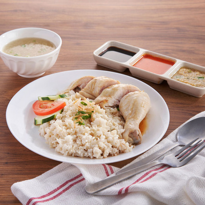
Hainanese chicken rice 14€
Hainanese chicken rice is a classic among Asian food dishes. It features succulent poached chicken served with fragrant rice cooked in chicken broth and infused with ginger.
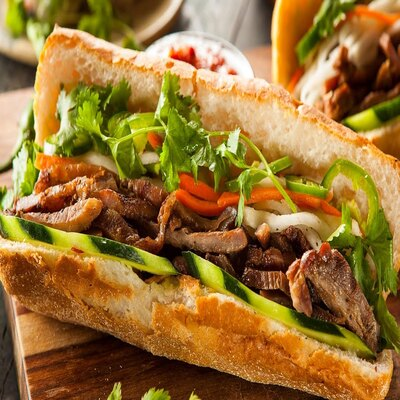
Banh mi 12€
Banh mi, a type of Vietnamese sandwich, is a delicious example of affordable Asian food that packs a punch of flavors. It typically consists of a crispy baguette filled with a combination of ingredients like marinated meats, pickled vegetables, fresh herbs, and a variety of sauces like mayonnaise or soy sauce.
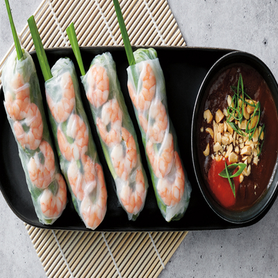
Vietnamese spring rolls 12€
Vietnamese spring rolls are a delightful combination of fresh ingredients and vibrant flavors. These translucent rice paper rolls are typically filled with a variety of ingredients like shrimp, pork, herbs, and vermicelli noodles.
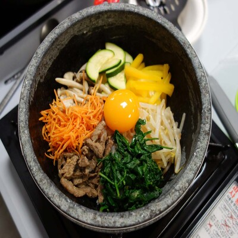
Bibimbap 15€
Bibimbap consists of warm rice topped with mixed vegetables, beef or chicken, and raw egg, as well as soy sauce and a dollop of chilli pepper paste for seasoning.
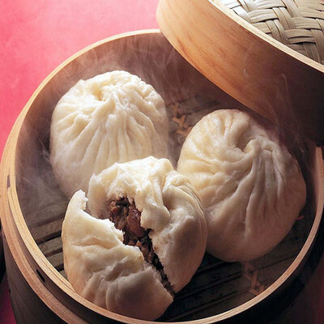
Baozi 12€
Baozi is a traditional chinese dish, filled with minced meats and vegetables, cooked in a hot steamer
Shoyu Ramen 18€
Shoyu ramen is a dish with a broth made of soy sauce. Shoyu means soy sauce in Japanese. It has high umami flavors along with a tangy strong taste too.
Mapo tofu 17€
This Sichuan specialty is an easy-make dish which is commonly described by Chinese cooks as: numbing, spicy hot, hot temperature, fresh, aromatic, flaky, tender and soft. Served with white rice.
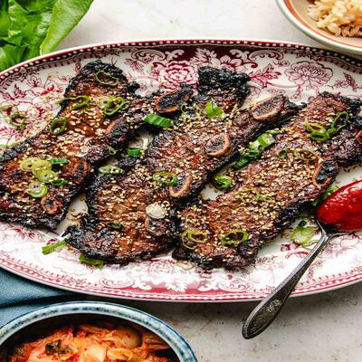
Kalbi 22€
Kalbi is a short ribs dish with grilled beef popular in South Korea. The ribs are marinated in a sweet sauce consisting of soy sauce, sugar, rice wine, sesame oil, and garlic. Served with white rice.
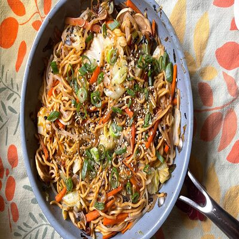
Yakisoba 18€
Yakisoba is a stir-fry japanase dish prepared with noodles, thinly sliced pork, carrots, cabbage, bean sprouts, onion, and mushrooms, and a special yakisoba sauce.
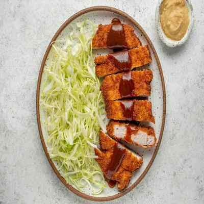
Tonkatsu 24€
Tonkatsu is a japanese dish that consists of a breaded, deep-fried pork cutlet. It involves coating slices of pork with panko (bread crumbs), and then frying them in oil. Served with rice.
Khao pad 16€
Thai style fried rice, consists of various vegetables and peeled and deveined shrimps.
Tod mun pla 20€
Tod mun pla or Thai fish cakes are deep-fried fish patties prepared with white soft fish flavored with aromatic Thai ingredients such as lemon grass, lime leaves, and fish sauce. Served with white rice.